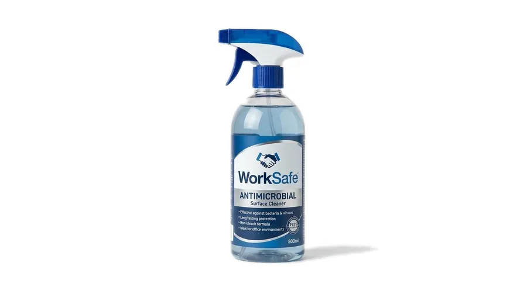

WorkSafe Antimicrobial
22,00 € / garrafa 5 L
Solución de recubrimiento antimicrobiano para superficies de contacto frecuente, desarrollada conjuntamente con OfiNova dentro del proyecto WorkSafe Smart Space. Reduce la carga microbiana entre limpiezas y se integra con sensores IoT que avisan cuando conviene reforzar la desinfección, pensado para oficinas, coworkings y espacios de trabajo compartido que quieren ir más allá de la limpieza tradicional.
Ver en la tienda HIGIENEX